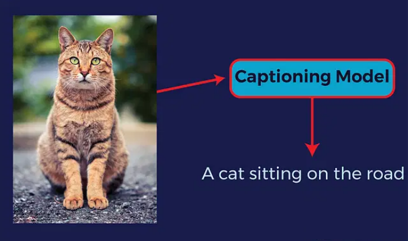
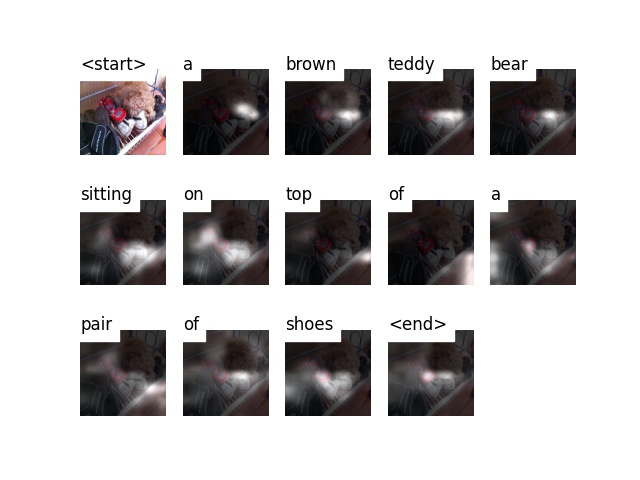
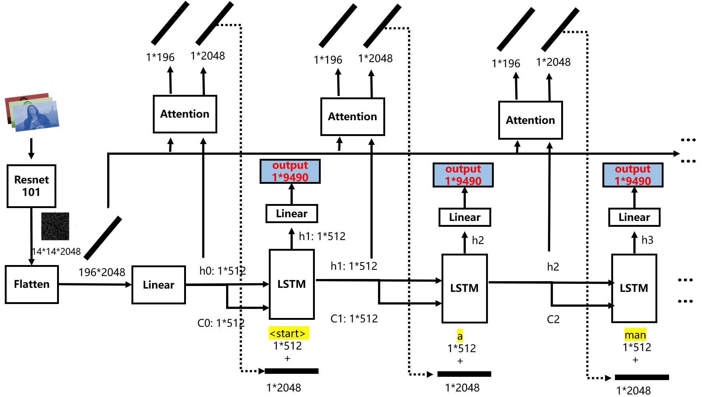
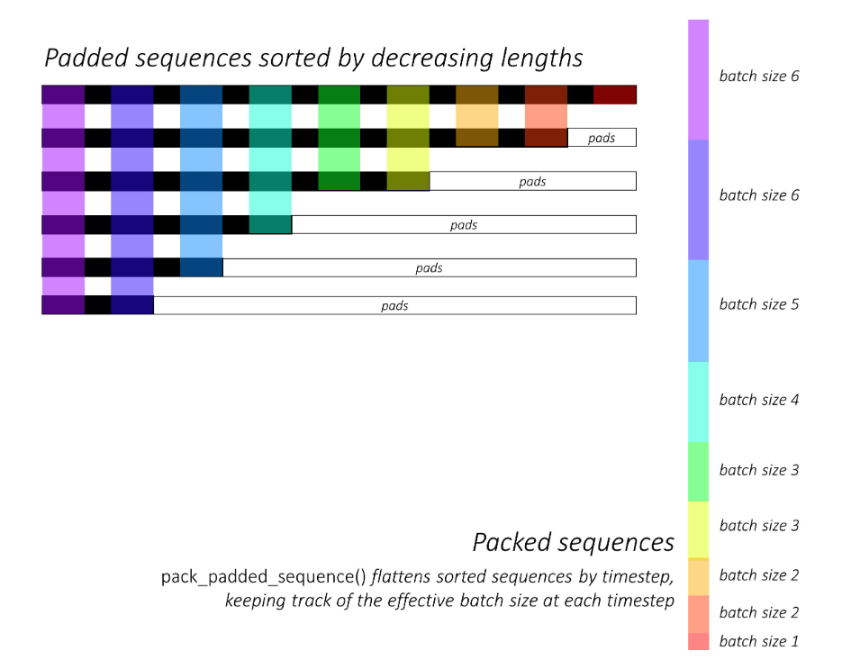
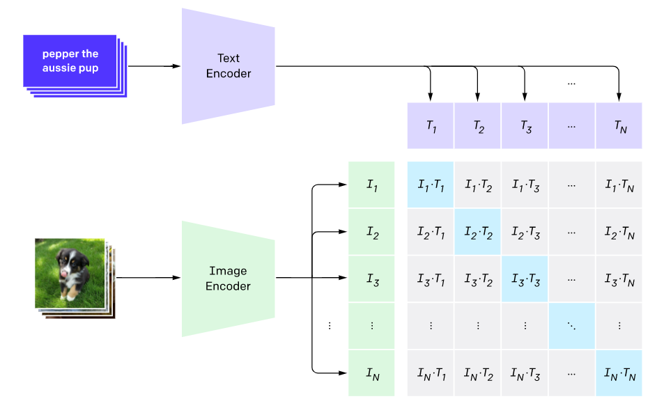
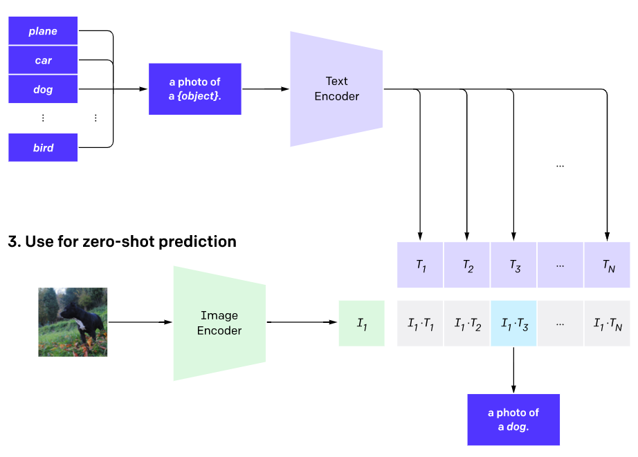
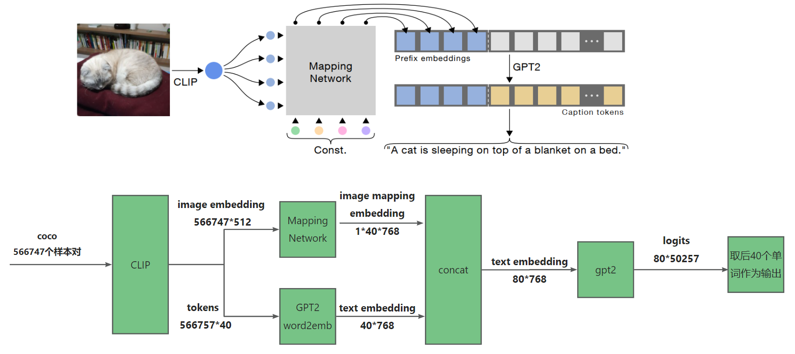

8.7 Image Captioning 图像描述
前言
图像描述是CV与NLP结合的一个典型任务，也是CV与NLP桥梁，本节将介绍图像描述模型的训练及使用，包括经典的CNN+RNN，以及现在流行的多模态模型。
本节内容将包括：
- 图像描述的概念，发展历史，常用数据集，BLUE评价指标
- 基于CNN+RNN+attention机制的图像描述模型训练
- 基于Clip+GPT2的图像描述模型训练

图像描述简介
Image Captioning （图像描述）是对图像采用文字进行描述的过程，Image Captioning又称图像图像字幕生成、图像标注、图像说明等，目前应用在医疗诊断、智能客服、人机交互等领域。
图像描述是一个交叉领域，将图片的视觉特征和自然语言处理结合起来，实现自动化的图片描述。
2014年之前，主流方法是采用数字图像处理进行特征提取，然后通过对特征的描述，实现image captioning。
2014年，Google发表了《Show and Tell: Lessons Learned from the 2015 MSCOCO Image Captioning Challenge？，首次采用CNN+RNN的形式进行端到端的深度学习模型训练，并且获得2015 COCO 图像描述的冠军。
- 2015年2月，Bengio领衔的团队针对Show and Tell改进，加入了attention机制，发表了《Show, Attend and Tell》， 该方法在文本生成模块，加入注意力机制，挖掘单词与图像区域的关联关系。
- 2019年，得益于Transformer广泛应用，图像描述开启了Transformer一统天下的时代，先后有Attention on Attention for Image Captioning、Image Captioning: Transforming Objects into Words和Entangled Transformer for Image Captioning等论文采用了Transformer进行图像描述，简要看了论文，发现模型结构图略显负责，不够优雅，这里就不贴图了，因为后续的超大预训练模型将会开启图像描述新范式。
- 2021年，随着图文、文本任务的预训练模型（pre-training model）的成功，学者迅速将其应用于图像描述，2021年有ClipCap，2022年BLIP， 2023年1月BLIPv2，目前BLIP系列已经达到较好效果，也将是本案例的重点。
简单来说，图像描述主流方法的发展，先经过CNN+RNN，及其变体，再到Transformer，再到VLP（visual language pre-training）模式，随着ChatGPT等预训练模型的成功，多模态任务也将有更多应用。
图像描述数据集
图像描述常用的数据集有Flickr8K、Flickr30K、Conceptual Captions (CC)，COCO2014，数据集中语料库的高频词云如下图所示：

图片来源：《2021-07-From Show to Tell A Survey on Deep Learning-Based Image Captioning》
本案例将采用COCO2014，该数据集train有82783张，val有40504张，test有40775张，每张图片对应有5~7句的caption。为了线下比较模型的性能，会把train和val经过karpathy分割后，train变成113287张，val变成5000张，test变成5000张，而在线测试的test不变，仍为40775张。
标注规则为：
- 描述这个场景的所有重要部分；
- 不描述不重要的细节。
- 不要描述在未来或过去可能发生的事情。
- 不描述一个人可能会说什么。
- 不提供专有的人名。
- 这些句子应该至少包含8个单词。
更多数据集介绍可参考Image Caption 2021最新整理：数据集 / 文献 / 代码
图像描述评价指标
图像描述的评价，可以参考机器翻译的评价，都是比较两个句子之间的相似度。
机器翻译中常用的评价指标有，BLEU1-4, METEOR, ROUGE-L, and CIDEr等，这里介绍最常见的BLEU1-4。
BLEU是IBM在2002年提出的，用于机器翻译任务的评价，发表在ACL，引用次数10000+，原文题目是“BLEU: a Method for Automatic Evaluation of Machine Translation”。
它的总体思想就是准确率，假如给定标准译文reference，模型生成的句子是candidate，句子长度为n，candidate中有m个单词出现在reference，m/n就是bleu的1-gram的计算公式。
当统计不再是一个单词，而是连续的N个单词时，就有了n-gram的概念，词组的概念称为n-gram，词组长度通常选择1, 2, 3, 4
举一个例子来看看实际的计算：
candinate: the cat sat on the mat
reference: the cat is on the mat
BLEU-1： 5/6 = 0.83
BLEU-2: 3/5 = 0.6
BLEU-3: 1/4 = 0.25
BLEU-4: 0/3 = 0
分子表示candidate中预测到了的词组的次数，如BLEU-1中，5分别表示, the, cat, on, the, mat预测中了。BLEU-2中，3分别表示, the cat, on the, the mat预测中了。以此类推。
针对BLEU还有些改进计算方法，可参考BLEU详解
BLEU的优点在于它考虑的是n-gram级别的匹配，而不是词级别的匹配，因此可以考虑更长的匹配信息，从而更好地评估翻译的质量。
但是，BLEU的缺点在于无论哪种n-gram被匹配上了，都会被同等对待，这可能会导致一些问题。例如，动词的匹配在翻译中可能比冠词更重要，但是在BLEU中，它们被同等地看待，这可能不太合适。
CNN+RNN 代码实现
接下来采用CNN+RNN结构，并配合attention机制，实现图像描述模型训练， 在coco2014上可实现23.1的BlEU-4 。
代码来自github，论文可参考《Show, Attend and Tel》
数据采用github上推荐的下载链接，coco2014，数据集划分采用 Andrej Karpathy划分好的json文件。
先看效果图，这是一张测试图片，模型可以输出 a brown teddy bear sitting on top of a pair of shoes，能对图中的泰迪、鞋子进行表述。

数据模块
数据下载与转换
首先下载数据，并转换数据为pytorch的dataset读取的形式
下载图像数据，val2014， train2014 文件夹，并将其放置到xxx/coco2014/images下
下载标注数据，caption_datasets.zip，其中包含coco, flickr8k, flick30k的标签，这里只使用dataset_coco.json
在配套代码00_create_input_files.py中设置以下路径，运行后获得相应的数据
create_input_files(dataset='coco',
karpathy_json_path=r'G:\deep_learning_data\coco_2014\image-caption-json\dataset_coco.json',
image_folder=r'G:\deep_learning_data\coco_2014\images',
captions_per_image=5,
min_word_freq=5,
output_folder=r'G:\deep_learning_data\coco_2014\dataset-created',
max_len=50)
获得的数据是经过预处理转换的，下面介绍对数据是如何处理的。
数据预处理
文本数据需要进行一系列的预处理，例如，将一张图片对应的5句不等长度的描述，整理为可以batch输入数据，这里涉及一些NLP常见的操作，下面通过代码进行剖析。
- 对描述的开头和结尾，加入起始、停止词， a man holds a football
- 将句子填充至等长，如100个词， a man holds a football ....
- 创建词映射，将词映射为编号， 如 [9488, 1, 20, 64, 3, 60, 57, 69, 35, 66, 14, 67, 17, 1, 68, 9489, 0,.., 0]，其中9488和9489,0分别表示
上述信息，通过00_create_input_files.py获得，数据处理后，分别获得：
- HDF5文件，包含了所有图片，数据形状为 N， 3, 256, 256，但hdf5在pytorch的dataloader中无法启用多进程，因此本案例改用保存图片路径的方式，在dataset中再读取图片
- CATIONS*.json，包含每个描述句子添加起始词、填充、映射后的索引，为 N_c * I 形式， N_c表示所有描述句子的梳理，I表示图像的数量。由于coco固定了一张图片有5个描述，因此N_c == 5.
- CAPLENS*.json，包含每句描述的长度，N_c * I ， N_c表示所有描述句子的梳理，I表示图像的数量。
- WORDMAP*.json，所以一个字典，包含了单词到索引的映射关系。
- xxx_paths.pkl：包含每张图片的路径，用于在dataset中进行图片读取
原代码采用HDF5进行图片读取，这样无法采用num_worker>1，因此在这里我将代码改为基于图片路径形式进行读取，可以充分利用cpu加载数据。详细内容参见dataset的编写。
模型模块
模型部分主要有encoder， decoder， attention三个模块。
- encoder为resnet101将图片变为14x14x2048的特征图，并且经linear层变换到向量形式，便于与文本特征拼接
- attention模块由多个linear层构成，注意力权重最终经sigmoid函数得到0-1区间的注意力权重，并且是1x196的向量，对应着14x14的图像区域。
- decoder为标准的LSTM，其输入由词嵌入向量1x512 + attention的特征1x2048构成
- output模块采用LSTM的hiddent feature，经过linear层输出1x9490的分类概率向量，9490表示单词库中总共有9490个单词。
模型结构如下图所示，本图对github原图进行了详细补充，对每一个数据维度及流向进行了标记：

训练与推理
在配套代码01_train.py代码中仅需要配置数据所在文件夹data_folder，执行 python 01_train.py即可。 在epoch=14左右会得到最优BLEU-4, 22.7。
关于超参数，num_worker可以设置大于1，batchsize设为了256，采用的是1080ti 11GB，显存占用8G+，耗时大约1.5小时一个epoch。
训练代码比较常规，只是文本任务在数据处理上有一个比较特殊的操作就是组batch时，先对文本长度进行排序，然后依次取batch送入LSTM。组batch的操作，具体如github所示：

推理观察
训练到14个epoch时可以将模型拿来试试了，将 BEST_checkpoint_coco_5_cap_per_img_5_min_word_freq.pth.tar的路径配置到02_inference.py
- args.img目前支持图片以及文件夹形式的推理
- args.model 是ckpt的路径
- args.word_map是单词库，模型预测出来的9490个类别需要对应到具体的单词，用的就是这个字典。
- out_dir是输出图片的文件夹
args.img = r'G:\deep_learning_data\coco_2014\images\val2014' #img path or dir
args.model = 'BEST_checkpoint_coco_5_cap_per_img_5_min_word_freq.pth.tar' # model checkpoint
args.word_map = r'G:\deep_learning_data\coco_2014\dataset-created\WORDMAP_coco_5_cap_per_img_5_min_word_freq.json'
out_dir = './output_img'
效果如下图所示
训练好的模型权重下载：链接：https://pan.baidu.com/s/1fLS0_EPqfj0x_PX3JLN1Eg 提取码：ta3v
到这里，快速地实现了一个效果还不错的图像描述模型，里边有一些新知识值得学习：
- 图像可经过模型提取特征，变为特征向量与文本特征向量融合，实现图文多模态的处理
- LSTM训练时，将句子长度排序，便可获得batch size依次递减的训练样本
- coco数据训练时，一个样本为 (一张图片，一个句描述，句子长度)，因此共5x113287=566435个训练样本
随着Transformer不断的落地应用，以及多模态模型langueage-visual模型的成功，基Transformer体系的图像描述模型成为主流。
下面介绍一款”亲民“的模型，CLIPCap，亲民指它在1080上1天就可以训练，并且仍旧使用了强大的Transformer模型，论文idea值得学习。
CLIPCap 代码实现
接下来，借助强大的多模态模型的特征提取能力实现图像描述。
这里采用CLIP对图像的理解能力，获取图像编码特征embedding向量，再经过一个生成器模型，实现图像描述。这个工作就是2021年11月发表的ClipCap。
ClipCap提出一种轻量化的方法，可以结合 CLIP的image encoder 和 GPT-2 ，实现图像描述。
ClipCap有三个部分，分别是image encoder， mapping network， gpt2。其中image encoder和gpt2都是在超大规模数据集上预训练过的，可以直接用。
在学习ClipCap前，先来了解什么是CLIP，什么是GPT2。
CLIP简介
CLIP(Contrastive Language-Image Pre-training)，基于对比学习的文图预训练模型，该模型可实现zero-shot的图像分类、检测等下游任务，也可以作为图像检索、图像生成、图像描述任务的backbone，是图文多模态模型领域中划时代意义的一个作品。
CLIP于2021年2月由openAI发表，并开源了模型，模型由4亿的图文数据，采用对比学习方式进行训练得到，由于对比学习与超大规模的数据集加持，使CLIP模型很好的理解了自然图像，在众多数据集上表现出了优异的zero-shot性能，同时在表征学习（representation learning）中也很好。
CLIP模型由text encoder和image encoder组成，分别对文本和图像进行特征提取，获得特征向量，随后进行对比学习，即图像1与文本1是一对数据，I1向量要与T1越接近越好，I1与其它的T向量越不接近越好，对于一个batch的数据来说，可以构成一个方阵，对角线上是正样本，非对角线是负样本。

训练伪代码如下：
# 分别提取图像特征和文本特征
I_f = image_encoder(I) #[n, d_i]
T_f = text_encoder(T) #[n, d_t]
# 对两个特征进行线性投射，得到相同维度的特征，并进行l2归一化
I_e = l2_normalize(np.dot(I_f, W_i), axis=1)
T_e = l2_normalize(np.dot(T_f, W_t), axis=1)
# 计算缩放的余弦相似度：[n, n]
logits = np.dot(I_e, T_e.T) * np.exp(t)
# 对称的对比学习损失：等价于N个类别的cross_entropy_loss
labels = np.arange(n) # 对角线元素的labels
loss_i = cross_entropy_loss(logits, labels, axis=0)
loss_t = cross_entropy_loss(logits, labels, axis=1)
loss = (loss_i + loss_t)/2
text encoder采用的是标准的text transformer。
image encoder则有多个模型，主要是ResNet系列，包含5个不同大小的模型：ResNet50，ResNet101，RN50x4，RN50x16和RNx64（后面三个模型是按照EfficientNet缩放规则对ResNet分别增大4x，16x和64x得到），ViT系列，3个不同大小的模型：ViT-B/32，ViT-B/16和ViT-L/14。所有的模型都训练32个epochs，采用AdamW优化器，而且训练过程采用了一个较大的batch size：32768。由于数据量较大，最大的ResNet模型RN50x64需要在592个V100卡上训练18天，而最大ViT模型ViT-L/14需要在256张V100卡上训练12天，都需要几千个V100天。
模型训练好之后，神奇之处在于其可以zero-shot的进行图像分类，这个方式很具有创新性。具体步骤是
- 人为设定一批候选类别的文本描述，例如：A photo of {label}， 然后label分别填入候选类别的单词，假设有N个类别，则得到N个句子
送入text encoder，得到N个文本特征向量
图像送入image encoder，得到图像特征向量
图像特征向量与N个文本特征向量进行比较，找到最近的那个特征向量，即可得到类别输出

使用CLIP进行zero-shot分类，另外一个比较重要的地方是文本描述的生成，上面的例子我们采用A photo of {label}，但其实也有其它选择，比如我们直接用类别标签，这其实属于最近NLP领域比较火的一个研究：prompt learning或者prompt engineering，具体可以见这篇综述论文：Pre-train, Prompt, and Predict: A Systematic Survey of Prompting Methods in Natural Language Processing，这里就不再进行阐述。
感兴趣可参考官方的ImageNet分类的Prompt engineering,采用80个不同的prompt来进行集成，发现在ImageNet数据集上能带来3.5%的提升，具体见CLIP公开的notebook。
到这里大体了解CLIP中有一个对自然图像理解能力很强的image encoder，可以获得很好的图像特征向量，接下来需要一个能接收embedding向量，输出文本描述的强大模型，GPT当之无愧作为首选。
GPT2简介
GPT2(Generative Pre-trained 2)，是由OpenAI开发的生成式自然语言模型，鉴于chatGPT的火爆，这里不过多介绍GPT1,2,3,3.5,4的差别。
在这里需要了解gpt2是一个生成式模型，根据输入的文本信息，可以生成一系列文本，如输入一个问题句子，gpt将句子变为text embedding，输入到模型中，然后一个一个单词的输出，最终输出一句回答。其中，人类输入的问题句子，可以看成是prefix embedding，gpt根据前缀信息，依次生成内容。
Prefix embeddings是指在GPT模型中，为每一个输入词添加一个前缀，然后将添加前缀后的词转化为向量表示。这个前缀是指输入词前面的所有词，它可以为模型提供更多的上下文信息，帮助模型更好地理解输入文本的含义。
举个例子，假设输入文本是“我喜欢吃苹果”，对于“苹果”这个词，它的前缀是“我喜欢吃”，添加前缀后的词就是“我喜欢吃苹果”。这个添加前缀后的词可以被转化为向量表示，然后作为GPT模型的输入。
在CLIPCap中，正式利用了gpt2强大的文本生成能力进行图像描述，但图像信息如何输入到gpt呢？接下来就看看CLIPCap的创新。
CLIP Captioning
2021年11月，ClipCap提出一种轻量化的方法，可以结合 CLIP的image encoder 和 GPT-2 ，实现图像描述。
ClipCap有三个部分，分别是image encoder， mapping network， gpt2。其中image encoder和gpt2都是在超大规模数据集上预训练过的，可以直接用。
由于CLIP和GPT2不好训练，所以设计一个mapping network，图像embedding特征向文本embedding特征的转换，从而巧妙的衔接了CLIP与GPT2，并且可以仅训练mapping nework，这一点与当前BLIP v2中的QFormer是一样的。

结合上图，来看看模型到底是如何实现图像描述的。
第一步，一张图片及其对应的描述文本，会被输入到CLIP中，得到image embedding向量：512维，文本则通过gpt2的字典转换为tokens，gpt2字典有50257个词。
第二步：图像特征经过maping network，获得40x768的特征，可以理解为将图像翻译为了40个768的特征向量
第三步：文本tokens经过word2emb获得 text embedding向量40x768维度，这里的40表示句子最长有40个单词，如果补足40，填充即可。
第四步：图像与文本特征拼接，输入到gpt2进行训练，gpt2输出80个50257维的分类概率向量，其中取后40个向量进行输出分类的单词，最终形成句子。
上述为训练过程，其中CLIP和GPT2是可以冻结的，详情可看代码。
在推理的时候，GPT2 word2emb的这一分支是没有的，gpt2仅拿到图像的40x768向量进行推理，逐步生成每一个单词，最终形成句子。
CLIP Captioning 训练代码实现
第一步，数据集下载及准备
首先准备数据集，这里采用coco 2014，需要下载的文件有
- 预处理过的标签文件：train_caption.json
- 原始图像文件夹：train2014，val2014
组织为以下目录形式
- ROOT_PROJECT / data / annotations / train_caption.json
- ROOT_PROJECT / data / train2014
- ROOT_PROJECT / data / val2014
第二步，CLIP模型特征提取，运行配套代码00_parse_coco.py
python 00_parse_coco.py --clip_model_type ViT-B/32
由于不涉及CLIP的训练，因此CLIP对每一张图片的输出是固定的，所以可以把训练集中的566757个样本对进行特征提取及文本tokens的映射。
执行以下代码，预计需要3小时完成56万多张样本对的处理。
结果将保存在
ROOT_PROJECDT / data / oscar_split_ViT-B_32_train.pkl
ROOT_PROJECDT / data / oscar_split_ViT-B_32_train_tokens.pkl
第三步，模型训练，运行配套代码01-train.py
python 01-train.py --data ./data/coco/oscar_split_ViT-B_32_train.pkl --out_dir ./coco_train/
到这里就可以开始训练了，在1080ti上训练10个epoch，耗时16小时，模型将保存在 ROOT_PROJECDT / coco_train 文件夹下
提供一个预训练权重，模型权重下载链接提取码：mqri
CLIP Captioning 推理代码实现
推理示例，运行配套代码02-inference.py，需要配置下面三个路径即可。
ckpt_path = r'coco_prefix-009-2023-0411.pt'
path_img = r'G:\deep_learning_data\coco_2014\images\val2014'
out_dir = './inference_output'
在推理代码中，配置好模型路径、测试图片/文件夹路径，输出路径，运行即可得到结果
推理仅需要0.2s即可获得一例输出，速度还是可以接受的。
下图为val2014中的一些推理结果示意图
到这里Clip Cap就结束了，简单回顾一下Clip Cap整体内容。
借力：Clip Cap 站在了两个巨人的肩膀上，分别是CLIP和GPT2
磨合：为了让两个模块可以更好的融合使用，提出mapping network模块将CLIP的输出转换为GPT2能接收的特征向量形式， 40x768的40个"单词"的特征向量形式。
亲民：在1080ti上一天时间就可以训练coco数据集，并且还能用上大模型，这个motivation不得不说很巧妙
如果想将Clip Cap运用于中文，也推荐大家阅读ClipCap-Chinese
小结
Image Captioning 是一个CV+NLP的典型应用，是从一幅图输出一句话的过程，并且具有较高的商业价值，如字幕生成、图像标注、图像说明等。
本文介绍了图像描述的概念，发展历史，常用数据集，BLUE评价指标，并通过代码实现两种主流的图像描述算法。
CNN+RNN架构
- CNN负责提取特征图，并变为特征向量1x512作为h0输入到RNN中
- RNN逐步输出单词
Clip Cap
- 借助大模型——CLIP和GPT2，效果比CNN+RNN好很多，这也是基于Transformer的深度学习模型广泛应用的原因之一
- 巧妙的将图像特征与NLP模型嫁接起来，后续更为强大的BLIP v2同样采用了此操作
关于图像描述、文图、图文等多模态任务，十分推荐大家学习以下内容